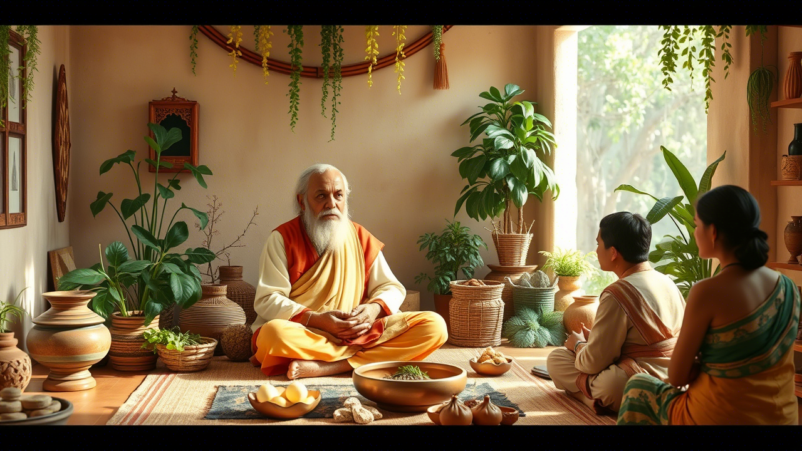
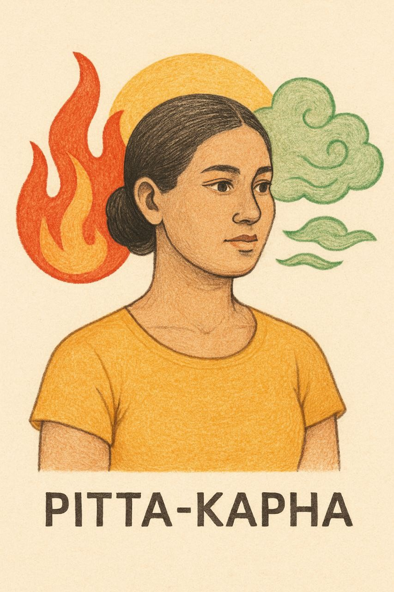
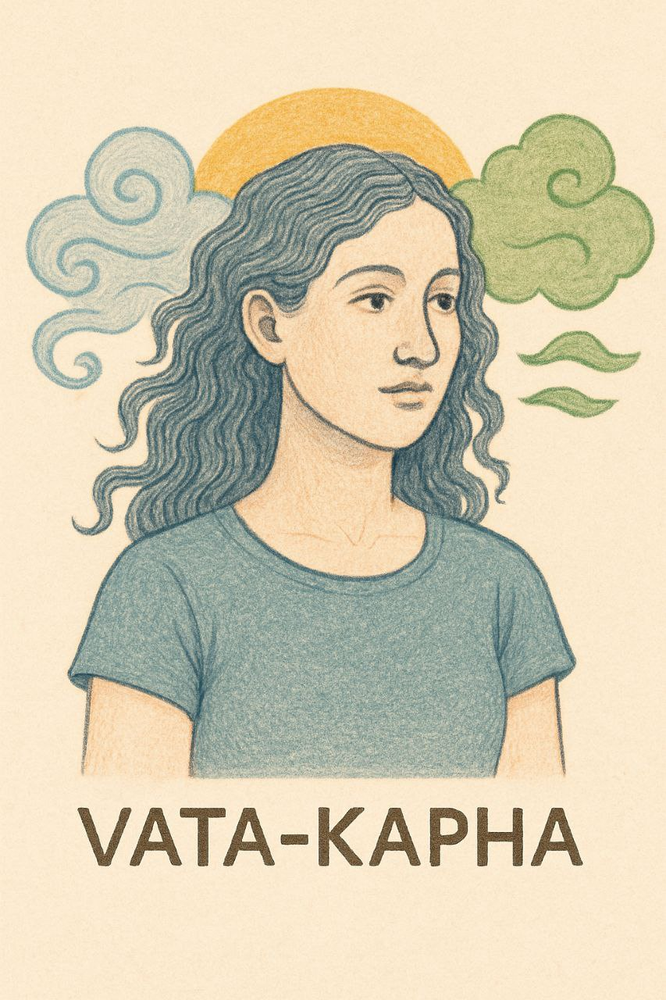
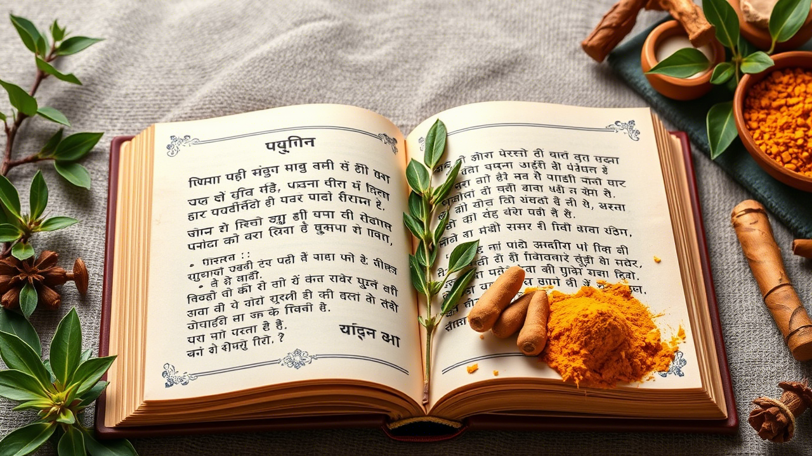

Discover the Ancient Wisdom of Ayurveda
5,000 years of holistic healing for modern living
What is Ayurveda?
Ayurveda, the "Science of Life," is the world's oldest holistic healing system originating in India over 5,000 years ago.
This ancient medical tradition views health as a perfect balance between body, mind, and consciousness. Unlike Western medicine that focuses on treating symptoms, Ayurveda emphasizes prevention and addresses the root cause of imbalance through personalized lifestyle practices, dietary recommendations, herbal remedies, and detoxification techniques.

Dr. Shivani Singh
Ayurvedic Practitioner

Traditional Ayurvedic herbs and preparation tools
The Three Doshas
Your unique mind-body constitution that governs all physical and mental processes
Vata
Air + Ether

Key Characteristics:
- Light, thin build
- Creative and energetic
- Quick to learn and forget
- Enthusiastic and vivacious
- Tendency toward anxiety
Balancing Tips:
- Warm, nourishing foods
- Regular routine
- Stay hydrated
- Plenty of rest
Pitta
Fire + Water
Key Characteristics:
- Medium, muscular build
- Intelligent and focused
- Strong digestion
- Goal-oriented
- Tendency toward irritability
Balancing Tips:
- Cooling foods
- Avoid excessive heat
- Regular swimming
- Gentle exercise
Kapha
Earth + Water

Key Characteristics:
- Solid, heavy build
- Strong and enduring
- Loving and compassionate
- Slow to anger
- Tendency toward lethargy
Balancing Tips:
- Light, dry foods
- Regular exercise
- Stimulating spices
- Early rising
Most people are a combination of two doshas
While we all have all three doshas, most people have one or two that dominate. Take our Dosha Quiz to discover your unique mind-body type.


Core Principles of Ayurveda
Fundamental concepts that form the basis of Ayurvedic philosophy
Five Elements
The entire universe is composed of five fundamental elements: Earth, Water, Fire, Air, and Ether (Space).
Manifestation in the Body:
- Earth → Bones, muscles
- Water → Fluids, plasma
- Fire → Digestion, metabolism
- Air → Breathing, movement
- Ether → Spaces in the body

Dosha Balance
Health is maintained when the three doshas (Vata, Pitta, Kapha) are in equilibrium according to one's constitution.
Signs of Balance:
- Good digestion (Agni)
- Proper elimination (Malas)
- Balanced tissues (Dhatus)
- Happy senses (Indriyas)
- Content mind (Manas)

Digestive Fire (Agni)
The strength of your digestive fire determines your ability to transform food into energy and eliminate toxins.
Types of Agni:
- Jatharagni (stomach fire)
- Bhutagni (elemental fire)
- Dhatvagni (tissue fire)
Weak agni leads to ama (toxins) accumulation.

Daily Routine (Dinacharya)
Aligning with nature's rhythms through a daily routine is essential for maintaining balance and preventing disease.
Key Practices:
- Wake before sunrise
- Oil pulling (Gandusha)
- Self-massage (Abhyanga)
- Yoga and meditation
- Early, light dinner
Detoxification (Panchakarma)
The process of eliminating toxins from the body through five cleansing actions to restore balance.
The Five Actions:
- Vamana (emesis therapy)
- Virechana (purgation)
- Basti (enema therapy)
- Nasya (nasal administration)
- Raktamokshana (bloodletting)

Rejuvenation (Rasayana)
Special therapies and herbs that promote longevity, enhance memory, and improve overall health and vitality.
Common Rasayanas:
- Chyawanprash
- Ashwagandha
- Amalaki
- Shatavari
- Brahmi
Seasonal Living (Ritucharya)
Adapting your lifestyle to nature's cycles for optimal health
Spring Wellness Guide
As nature renews itself in spring, Kapha dosha accumulates from winter begins to melt, often leading to seasonal allergies, congestion, and sluggishness.
Spring Recommendations:
- Diet: Light, dry, warming foods with bitter, pungent, and astringent tastes
- Herbs: Ginger, turmeric, fenugreek, mustard, basil
- Activities: Vigorous exercise, dry brushing, nasal cleansing
- Detox: Ideal time for cleansing and Panchakarma
Summer Wellness Guide
Summer's heat intensifies Pitta dosha, potentially causing inflammation, irritability, and digestive issues.
Summer Recommendations:
- Diet: Cooling, hydrating foods with sweet, bitter, and astringent tastes
- Herbs: Mint, coriander, fennel, rose, aloe vera
- Activities: Swimming, moonlit walks, cooling pranayama
- Lifestyle: Avoid midday sun, wear light clothing
Fall Wellness Guide
Fall's dry, cool, and windy nature can aggravate Vata dosha, leading to anxiety, dry skin, and irregular digestion.
Fall Recommendations:
- Diet: Warm, moist, grounding foods with sweet, sour, and salty tastes
- Herbs: Ginger, cinnamon, cardamom, licorice
- Activities: Gentle yoga, warm oil massage, meditation
- Lifestyle: Maintain regular routine, stay warm
Winter Wellness Guide
Winter's cold and heavy qualities can increase both Vata and Kapha, causing stiffness, lethargy, and respiratory issues.
Winter Recommendations:
- Diet: Warm, nourishing foods with sweet, sour, and salty tastes
- Herbs: Tulsi, ginger, black pepper, ashwagandha
- Activities: Indoor exercise, steam therapy, warm baths
- Lifestyle: Adequate rest, warm clothing
Continue Your Ayurvedic Journey
Recommended resources for deeper learning

The Complete Book of Ayurvedic Home Remedies
Comprehensive guide to using Ayurveda for common ailments with practical home treatments.
Download the Book